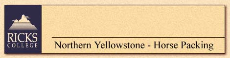
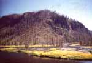

 |
Sunday and Friday accommodations
will be in apartment-style housing adjacent to or on campus. Each apartment
(3 double occupancy bedrooms-twin beds- with shared common living room)
houses maximum of 1 couple (private bath) or 3 singles (unlimited, no extra
charge) who share one bath. Part-time camping in the spectacular mountains
of Northern Yellowstone National Park. Tent provided; maximum of 2 people
per tent; bring sleeping bag, ground pad, although some rentals available.
Pit toilets. Light chores expected: preparation of toilet facilities/ cooking
and cleaning-up. Will travel several miles per day up to 9,000 feet. No
coffee or tea on campus. No alcohol allowed: smoking prohibited. For PHYSICALLY
ACTIVE HOSTELERS.
Bus: Y Plane: Y Train: N Ferry: N |
| July 5-11, 1998 - $425 | Top • Back |
| HORSE PACKING
IN YELLOWSTONE PARK
Explore the beautiful mountains of Northern Yellowstone Park. Study the flora and fauna found within the Greater Yellowstone ecosystem. Animals that will be studied includes the gray wolf, bears (grizzly and black), elk, and others. Nature and wildlife rides will cover the results of the Forest Fires of 1988 and Big Freeze of 1989. Learn philosophies concerning land use and ethics. Classes review history and expeditions of the park. Learn how the park received its name, Indians that traveled the area, and early mountain men. Participants will learn care of horses, saddling, bridling, safety, etiquette, grooming, and packing. Field work will illustrate basic equestrian, setting up “low impact” horse camps and other camping skills. |
|